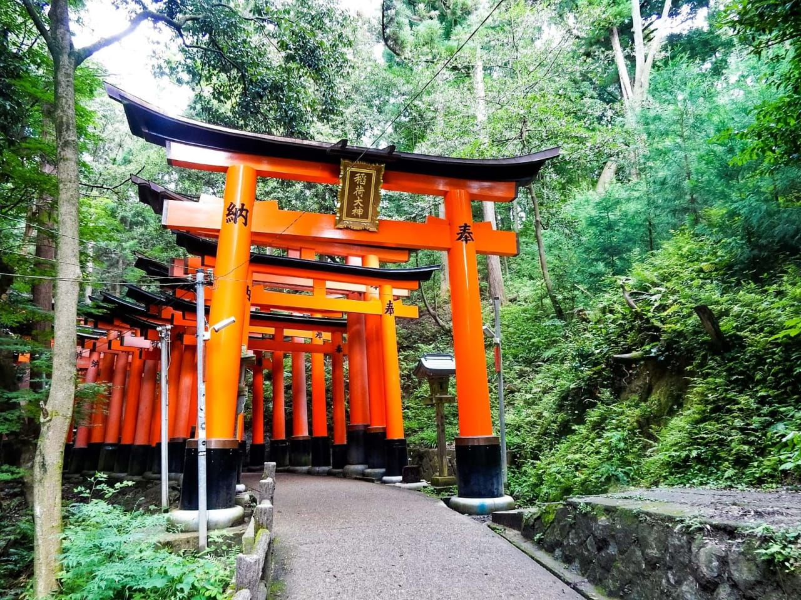
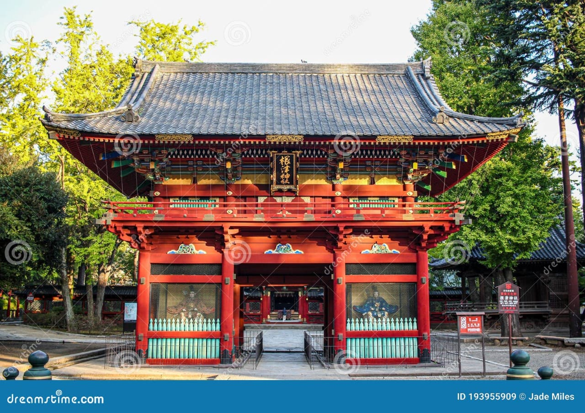
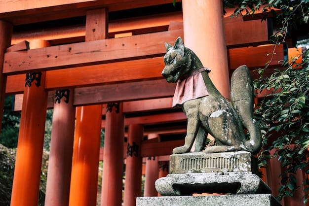
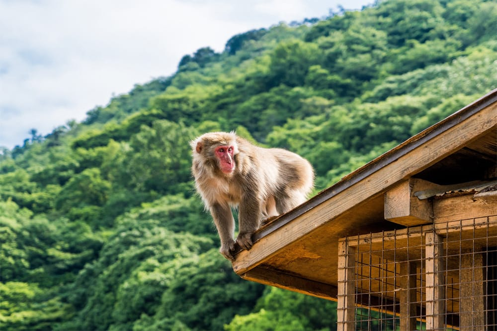
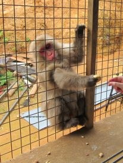
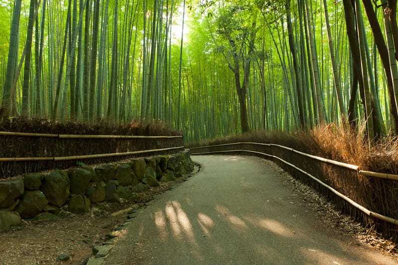
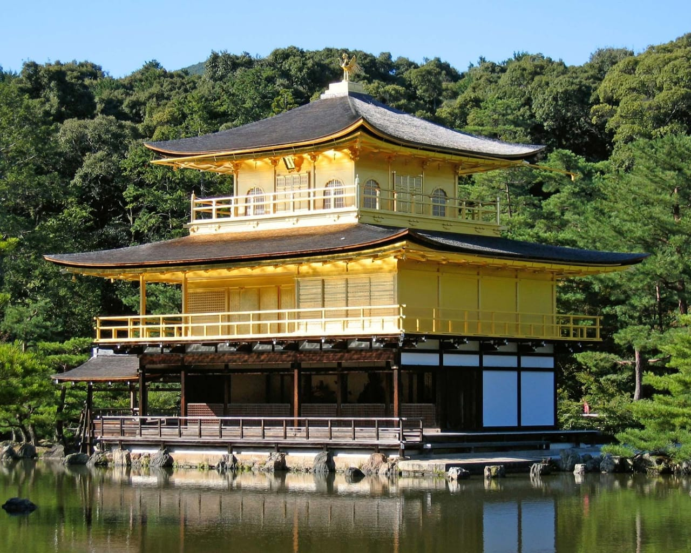
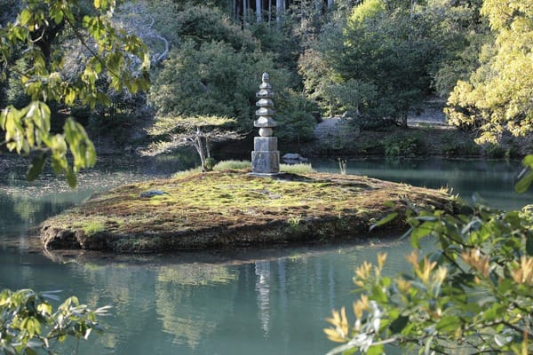

Red Torii Gates, JAPAN 23 October 2024

Day Highlights
- Entered through the grand Romon
- Spotted many fox statues(KITSUNE)
- Walked through the famous Senbon Torii


📍 Location Visited
“Every gate you pass is a step into peace, tradition, and the spirit of Japan.”
A journey through thousands of gates, each whispering stories of devotion and history...
DO YOU KNOW?
Fushimi Inari Taisha has over 10,000 red torii gates, and each one is donated by a person or business hoping for good luck and success!
Arashiyama Monkey Park, Japan 24 October 2024

Day Highlights
- Hiked up the forested trail to the monkey park
- Explored nearby Arashiyama sights
- Fed monkeys safely from a special hurt


📍 Location Visited
"In the heart of Kyoto, the monkeys roam free"
A little hike, a big reward!...
DO YOU KNOW?
Baby Monkeys are usually born in Spring to early summer, and cling adorably to their mothers.
Kinkaku-ji(Golden Pavilion Temple), Japan 25 October 2024

Day Highlights
- Paused for reflection at the Anmintaku Pond
- Fed the Koi Fish in the Pond
- Enjoyed matcha tea at the garden


📍 Location Visited
“Shining in silence,the Golden Pavilion speaks in peace.”
A Golden treasure hidden in a quiet garden...
Did you know?
The Building was rebuilt in 1955.